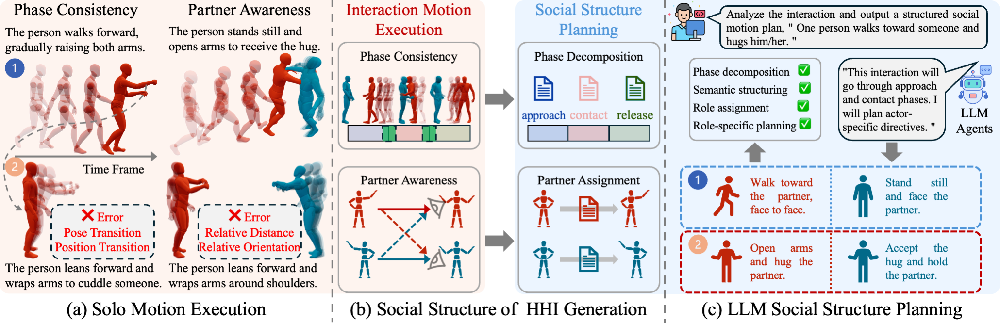
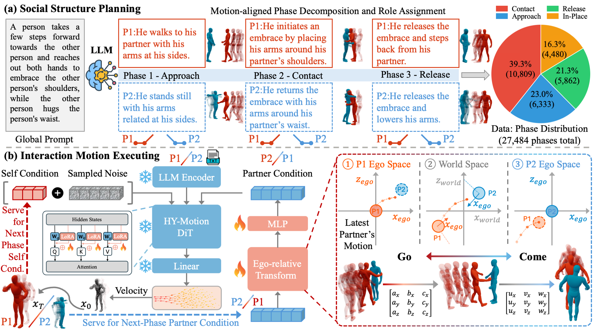

1University of New South Wales
2National University of Singapore
3NVIDIA
4Nanjing University
5University of Technology Sydney
6Australian National University
✉Corresponding author

Social structure of text-driven HHI generation. (a) Solo motion execution provides strong intra-personal motion priors but lacks interaction-level coordination. (b) HHI requires social structure along two dimensions: phase-level temporal organization and partner-aware coordination. (c) LLMs offer social planning abilities to make such structure explicit for interaction motion execution.
Although text-to-motion generation has achieved strong progress in synthesizing realistic single-person motions from language, extending it to text-driven 3D human–human interaction (HHI) remains non-trivial, as HHI requires modeling the underlying social structure that governs phase progression, actor roles, and inter-actor coordination. In this paper, we formulate HHI generation as a social structure modeling and grounding problem: the model must first infer how an interaction unfolds and how the two actors coordinate their roles, and then realize this structure as continuous, physically plausible, and partner-aware 3D motion. To study how such structure should be modeled, we first examine the capability boundary of large language models (LLMs) for HHI generation. Our analysis shows that LLMs can think by recovering phase decompositions and partner-aware roles, but cannot directly move, as they fail to generate dynamic, physically plausible, and interaction-aware motion. This motivates our planner–executor paradigm, Think with LLM, Move with Motion Skill. The LLM planner converts implicit interaction semantics into motion-aligned social supervision by decomposing interactions into phases, assigning partner-aware actor roles, and aligning them with motion sequence. The motion executor then grounds the planned social structure into coordinated two-person motion by adapting a pretrained solo motion model with LoRA, previous-phase self-conditioning, and ego-relative partner conditioning. Together, our Solo-to-Social framework bridges social organization and motion realization, producing 3D HHI with improved phase consistency, role alignment, and partner-aware coordination.

Overview of our proposed planner–executor paradigm for social-structure-centered HHI generation. (a) The LLM serves as a social structure planner which recovers plausible phase decompositions and partner-aware role assignments from global prompt. (b) The motion skill is built on a solo motion backbone equipped with self and partner conditioning for motion execution.
Live 3D viewers — drag to orbit. P1 in orange, P2 in blue.
@misc{wang2026socialstructure,
title = {Social Structure Matters in 3D Human--Human Interaction Generation},
author = {Zhongju Wang and Beier Wang and Yatao Bian and Pichao Wang and Zhi Wang
and Daoyi Dong and Hongdong Li and Huadong Mo and Zhenhong Sun},
year = {2026},
eprint = {2606.24255},
archivePrefix = {arXiv},
primaryClass = {cs.CV}
}